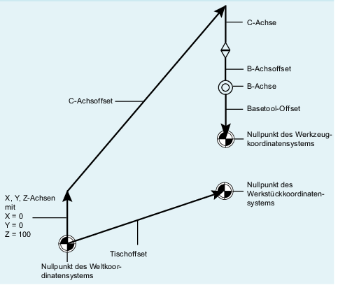

Die kinematische Struktur einer Maschine mit Orientierungstransformation wird durch eine oder zwei kinematische Ketten (Teilketten) beschrieben, die vom Nullpunkt des Weltkoordinatensystems ausgehen. Eine der beiden Ketten, die Werkzeug-Kette, endet am Bezugspunkt des Werkzeugs, die andere, die Werkstück-Kette im Nullpunkt des Basiskoordinatensystems.
Die Funktion CORRTRAFO schreibt Hebelarmlängen und Achsrichtungen bei Maschinen mit Orientierungstransformation in spezielle Korrekturelemente. Eine kinematische Kette wird unter anderem mit Elementen vom Typ OFFSET beschrieben, die über $NK_TYPE definiert werden.
Die beiden Teilketten können sich jeweils in maximal vier Abschnitte aufteilen:
Abschnitt 1 beginnt am Startpunkt der Kette und endet an der ersten Orientierungsachse.
Abschnitt 2 ist der Abschnitt zwischen Orientierungsachse 1 und Orientierungsachse 2.
Abschnitt 3 ist der Abschnitt zwischen Orientierungsachse 2 und Orientierungsachse 3.
Abschnitt 4 ist der Abschnitt zwischen Orientierungsachse 3 und dem Ende der Werkzeug- bzw. Werkstück-Kette.
Die Abschnitte können jeweils konstante Kettenelemente des Typs OFFSET oder ROT_CONST enthalten.
Die folgende Grafik zeigt eine Orientierungstransformation mit 2 Orientierungsachsen.
CORRTRAFO Beispiel
Die Abschnitte sind eindeutig definiert: Durchläuft man die kinematische Teil-Kette von ihrem Startpunkt bis zum Endpunkt, so hat der erste Abschnitt den Index 0, der nächste den Index 1 usw. Der Index des letzten Abschnitts ist dann immer gleich der Zahl der Orientierungsachsen.
Auf jeweils ein konstantes kinematisches Kettenelement (Kettenelement des Typs $NK_TYPE[<n>] = "OFFSET") in jedem dieser Abschnitte kann mit der Systemvariablen $NT_CORR_ELEM_T[<n>, 0 ... 3] bzw. $NT_CORR_ELEM_P[<n>, 0 ... 3] verwiesen werden. In diese so bezeichneten Elemente werden mithilfe der Funktion CORRTRAFO die Korrekturwerte geschrieben, die bei der Maschinenvermessung ermittelt wurden.
$NT_CORR_ELEM_T[1,0] = "C_AXIS_OFFSET"; Offset der C-Achse (Orientierungsachse 1) in Abschnitt 1 ist als Korrekturelement definiert.
$NT_CORR_ELEM_T[1,1] = "B_AXIS_OFFSET"; Offset der B-Achse (Orientierungsachse 2) in Abschnitt 2 ist als Korrekturelement definiert.
$NT_CORR_ELEM_T[1,2] = "BASE_TOOL_OFFSET"; Offset von der B-Achse zum Werkzeugbezugspunkt in Abschnitt 3 ist als Korrekturelement definiert.
Die Reihenfolge der Verweise in $NT_CORR_ELEM_T/P[<n>, 0 ... 3] muss mit den oben beschriebenen Abschnitten korrespondieren, d. h. in $NT_CORR_ELEM_T/P [<n>, 0] kann nur ein Kettenelement stehen, das vor der ersten Orientierungsachse liegt usw..
Die Funktion CORRTRAFO schreibt in die so definierten Korrekturelemente die Werte, die über die Vermessung der Maschine bestimmt wurden. Die Modifizierung der Korrekturwerte wird in CORRTRAFO über den Parameter <Corr_Mode> definiert.
Sind Bit 7 oder Bit 8 in der Systemvariablen $NT_CNTRL[<n>] gesetzt, werden am Ende der Werkstück-Kette (Bit 7) bzw. vor dem Startpunkt der Werkzeug-Kette (Bit 8) intern automatisch zusätzliche konstante Kettenelemente eingefügt, die eine Verbindung vom Endpunkt der Kette zum Maschinennullpunkt herstellen ("Kette schließen").
Diese automatisch eingefügten Elemente können von extern nicht beschrieben, sondern nur gelesen werden (siehe dazu die Systemvariablen $AC_TRAFO_CORR_ELEM_P/T).
Ist die Systemvariable $NT_CLOSE_CHAIN_T nicht leer, wird die Werkzeug-Kette nicht am Endpunkt der Kette, sondern am Endpunkt des bezeichneten Kettenelements geschlossen. Weitere Kettenelemente, die hinter diesem Punkt liegen, führen dann beim Aktivieren der Transformation zu einer entsprechenden Nullpunktverschiebung.
Außer den konstanten Offsets zwischen den Orientierungsachsen können mit der Funktion CORRTRAFO auch die Richtungsvektoren der Orientierungsachsen beschrieben werden. Unter dem Index einer Orientierungsachse wird hier der Index verstanden, der sich ergibt, wenn man die kinematische Teilkette vom Ursprung bis zu ihrem Ende durchläuft, wobei die Zählung bei null beginnt. Der Index einer Orientierungsachse ist deshalb immer gleich dem Index des davorliegenden Abschnitts.
Der Index einer Orientierungsachse kann auch mit der Systemvariablen $AC_TRAFO_ORIAX_LOC ermittelt werden.
Die maximal zulässige Veränderung eines Kettenelements kann durch die beiden Settingdaten SD41610 $SN_CORR_TRAFO_LIN_MAX für Offsetvektoren und SD41611 $SN_CORR_TRAFO_DIR_MAX für die Richtungsvektoren von Orientierungsachsen begrenzt werden. SD41610 $SN_CORR_TRAFO_LIN_MAX gibt an, um welchen Betrag jede einzelne Vektorkomponente gegenüber ihrem Bezugswert maximal verändert werden darf. SD41611 $SN_CORR_TRAFO_DIR_MAX gibt an, um welchen Winkel sich die Richtung des Achsvektors maximal gegenüber ihrem Bezugswert verändern darf. Der Bezugswert ist dabei immer der entsprechende Wert, der in der beim Aufruf von CORRTRAFO aktiven Transformation wirksam ist. D. h., dass eventuell nach der Aktivierung der Transformation veränderte Inhalte der Kinematikdaten in der Datenhaltung keinen Einfluss auf die Wirkungsweise der Funktion CORRTRAFO haben.